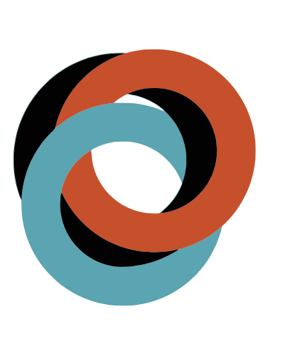
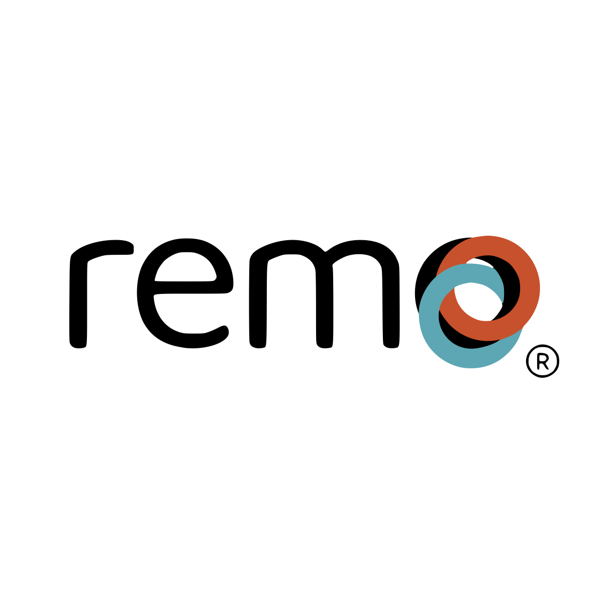

Para quién es
Dirección, equipo comercial, diseño, operación, aliados, inversionistas, cámaras de comercio, proveedores y nuevos colaboradores.
Brand system 2026
Remo Group S.A.S. internacionaliza compañías con estrategia, operación y respaldo.

00 / Criterio de uso
Dirección, equipo comercial, diseño, operación, aliados, inversionistas, cámaras de comercio, proveedores y nuevos colaboradores.
Posicionamiento, mensajes, tono, identidad visual, aplicaciones, uso del logo, gobierno de marca y criterios de implementación.
Datos financieros, cifras comerciales, certificaciones, cobertura, clientes o condiciones legales no verificadas. Todo dato no confirmado debe marcarse como pendiente.
00.1 / Información observada
Capacidad orientada a transformar y preparar empresas para procesos de comercio internacional.
Capacidad asociada a distribución, coordinación operativa y procesos logísticos de comercio internacional.
Capacidad enfocada en conexión con clientes, proveedores y oportunidades de abastecimiento.
Capacidad relacionada con respaldo financiero, asegurabilidad y protección de decisiones empresariales.
01 / Diagnóstico
02 / Definición estratégica
Remo acompaña empresas en procesos de internacionalización, importación, exportación, abastecimiento, conexión comercial, operación logística y respaldo financiero.
Internacionalización con estrategia, operación y respaldo.
La internacionalización no es un evento. Es un sistema que integra producto, mercado, regulación, logística, caja, seguros, proveedores, compradores y ejecución.
03 / Arquitectura de marca
04 / Esencia
Ayudar a empresas latinoamericanas a convertir oportunidades internacionales en rutas viables de crecimiento.
Acompañar procesos de comercio exterior con diagnóstico, preparación, conexión, operación y seguimiento.
Información no identificada; se recomienda validar con el equipo directivo de Remo.
Cercana, técnica, serena, pragmática, conectadora y orientada a decisiones.
05 / Posicionamiento
06 / Públicos
Gerente pyme en expansión que quiere exportar, importar, abrir mercado o abastecerse con menor improvisación.
Costos no visibles, requisitos confusos, proveedores no validados, documentos incompletos, caja frágil y baja trazabilidad.
Diagnóstico, ruta clara, validación, coordinación operativa, conexión comercial y respaldo en decisiones críticas.
07 / Identidad verbal
08 / Mensajes comerciales
09 / Sistema visual
10 / Logo

El logo principal y el isotipo usado en este sitio fueron generados desde el PDF vectorizado cargado por Remo. Área de seguridad, medidas exactas y tamaños mínimos: Pendiente de validación directiva.
10.1 / Activos oficiales incluidos
Versión principal para fondos claros, documentos técnicos y piezas comerciales.
Descargar PNG webVersión negativa para fondos negros, azul profundo o fotografía oscura.
Descargar PNGRecurso secundario derivado del logo vectorizado para nodos, rutas y cierres visuales.
Descargar PNG
Archivo maestro PDF cargado por Remo y previews originales adjuntos al proyecto.
Descargar PDF Descargar engine JSON11 / Tipografía
Textos técnicos, tablas, fichas, propuestas, diagnósticos, informes y contenidos comerciales.
Datos, decisiones, alertas, requisitos, costos, riesgos y llamados a la acción.
12 / Sistema cromático
#000000#083B4A#1F2933#C06025#5EA0AB#F3F6F8#F6EFE713 / Iconografía y diagramas
14 / Aplicaciones
Este sitio debe tener una biblioteca operativa de marca: archivos listos para editar, importar a Canva o entregar a diseño, comercial y dirección. Los datos no confirmados se dejan como campos editables o pendientes de validación directiva.
Firma corporativa editable con logo oficial, claim, contacto y campos para nombre, cargo y teléfono.
DescargarFrente y reverso con sistema de rutas, campos de contacto y QR pendiente de validación.
DescargarPortada base para propuestas B2B con alcance, módulos, estado y pendientes críticos.
DescargarResumen institucional de una página para empresarios, aliados, cámaras e inversionistas.
DescargarPlantilla para evaluar producto, mercado, regulación, logística, finanzas y ejecución.
DescargarReporte ejecutivo para estado de ruta, riesgos, decisiones, hitos y siguiente paso.
DescargarFicha para ordenar país, segmento, canal, requisitos, precio, competencia y ruta comercial.
DescargarMatriz base para Incoterm, flete, seguro, impuestos, nacionalización, caja y margen.
DescargarSlide maestro para presentar a Remo ante aliados, programas, banca e inversionistas.
DescargarMapa de carpetas para marca, legal, comercial, operación, finanzas y alianzas.
DescargarPlantilla editorial B2B para explicar comercio exterior con claridad, método y CTA.
DescargarFormato vertical para stand, pendón o punto de contacto con QR y mensaje comercial.
Descargar15 / Guía editorial
Una pieza debe decir qué decisión ayuda a tomar, qué riesgo reduce y qué siguiente paso propone.
Cuando un dato no esté confirmado, usar: Información no identificada; se recomienda validar con el equipo directivo de Remo.
Priorizar rutas, costos, requisitos, actores, documentos, tiempos, riesgos y trazabilidad.
16 / Aliados e inversionistas
Para aliados institucionales, Remo convierte diagnósticos en rutas aplicadas. Para inversionistas, Remo articula comercio, logística, representación comercial, riesgo financiero, asegurabilidad y potencial de escala regional. Cifras, clientes, tracción, unit economics y casos deben validarse antes de cualquier presentación.
17 / Gobernanza
18 / Implementación
19 / Pendientes
Medidas exactas del logo, área de seguridad y tamaños mínimos.
Datos de contacto oficiales, correos, teléfonos, dirección y QR.
Cifras comerciales, cobertura, clientes, casos, testimonios y métricas.
Condiciones financieras, legales, regulatorias y promesas de servicio.
Versión final del isotipo oficial extraído del archivo maestro validado.
20 / Guía rápida
Frase madre: Remo internacionaliza compañías con estrategia, operación y respaldo.
Claim: Internacionalización con estrategia, operación y respaldo.
CTA: Agenda un diagnóstico de internacionalización.
Regla: Si un dato no está confirmado, no se inventa. Se marca como pendiente de validación directiva.
{kind=link}
{kind=link}
{kind=link}
{kind=link}
{kind=link}
{kind=link}
{kind=link}
{kind=link}
{kind=link}
{kind=link}
{kind=link}
{kind=link}
{kind=link}
{kind=link}